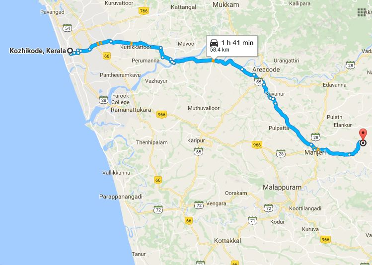

ADDRESS:
Eranad Knowledge City
Elankur P.O,
Cherukulam,
Manjeri

Eranad Knowledge City
Elankur P.O,
Cherukulam,
Manjeri
Eranad Knowledge City Technical Campus Manjeri is a self financing engineering college
established in the year 2012 and was run by Al - Hind Educational And Charitable Trust.
It is 60 Km East of Calicut. Campus inclusdes Engineering and Architecture colleges.
Prayer meeting:Don't have prayer meeting or contacts.
How to reach:Catch Manjery bus from New bus stand and get down at Manjery. From there catch bus which pass through Cherukulam and get down at Koyilandipady or EKC bus stop.
Possibility:Manjery Medical College, KMCT,MES Medical College and NIT can reach out and build Contacts.